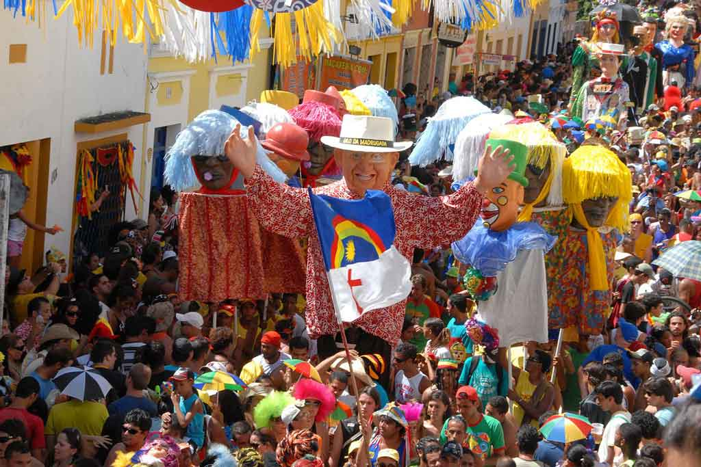

Aqui Vemos a Capela Dourada

Sua construção contou com uma série de célebres artistas da região, com uma arquitetura divina,
ornamentos, pinturas e esculturas memoráveis e uma forte presença do tom dourado que marcam esta capela.
E aqui Vemos a Embaixada dos Bonecos Gigantes
Ao longo da história das festividades de carnaval em Recife, começaram a ser feitos bonecos,
inspirados em tradições de festas religiosas na Europa.Na medida em que sua quantidade e qualidade foram aumentando,
surgiu a necessidade de um local em que se pudesse apreciar os bonecos.Hoje, a Embaixada dos Bonecos Gigantes
abriga uma série de personagens famosos, como Chacrinha, Pelé, Elvis Presley e Jô Soares – alguns com um realismo impressionante!